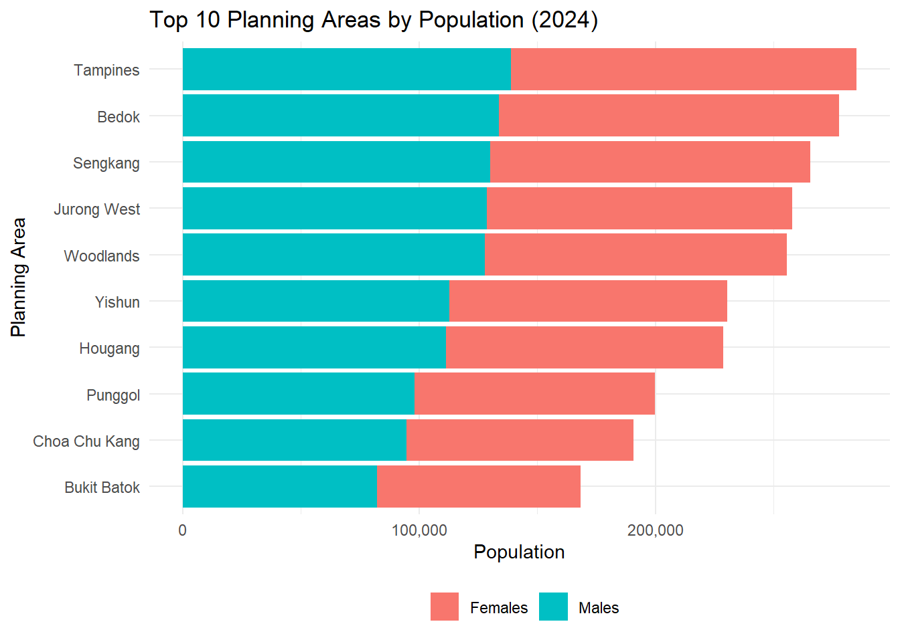
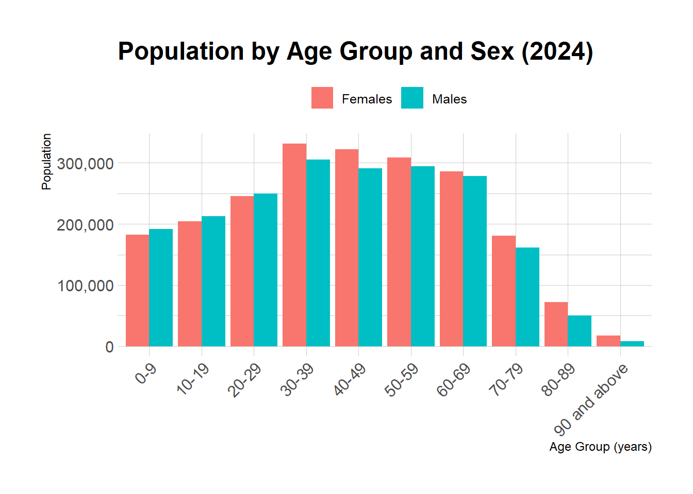
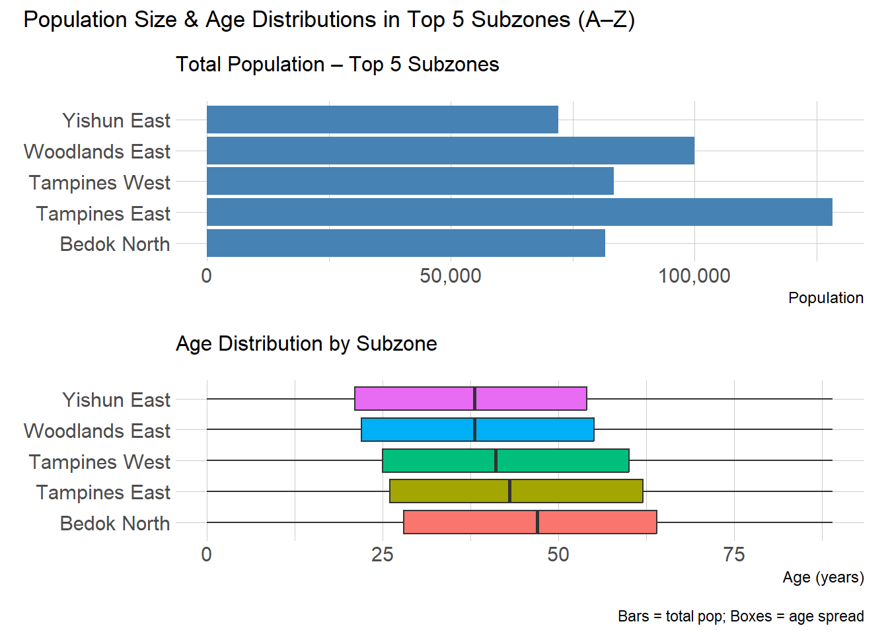

Code
pacman::p_load(ggrepel, patchwork,
ggthemes, hrbrthemes,
tidyverse, ggiraph, plotly,
patchwork, DT)
library(scales)
library(forcats)Andre Ong Jia Kang
May 1, 2025
May 3, 2025
Rows: 60,424
Columns: 6
$ PA <chr> "Ang Mo Kio", "Ang Mo Kio", "Ang Mo Kio", "Ang Mo Kio", "Ang Mo K…
$ SZ <chr> "Ang Mo Kio Town Centre", "Ang Mo Kio Town Centre", "Ang Mo Kio T…
$ Age <chr> "0", "0", "1", "1", "2", "2", "3", "3", "4", "4", "5", "5", "6", …
$ Sex <chr> "Males", "Females", "Males", "Females", "Males", "Females", "Male…
$ Pop <dbl> 10, 10, 10, 10, 10, 10, 10, 10, 30, 10, 20, 10, 20, 30, 30, 10, 3…
$ Time <dbl> 2024, 2024, 2024, 2024, 2024, 2024, 2024, 2024, 2024, 2024, 2024,…Observations
Before using the data, I want to check if there is any missing values or
We want to find out the top 10 planning areas which the most population.
Summarise total Pop by PA, arrange descending, and slice top 5.
Filter original data to those top 5 PAs and group by Sex to get sex‐specific totals.
geom_col() to build stacked bars, ordered by total population.
coord_flip() for horizontal labels and theme_minimal() for clarity.
# identify top 10 PAs
top5_pa <- df %>%
group_by(PA) %>%
summarise(TotalPop = sum(Pop), .groups = "drop") %>%
arrange(desc(TotalPop)) %>%
slice_head(n = 10) %>%
pull(PA)
# prepare stacked bars by sex
p1_data <- df %>%
filter(PA %in% top5_pa) %>%
group_by(PA, Sex) %>%
summarise(Pop = sum(Pop), .groups = "drop")
p1 <- ggplot(p1_data, aes(x = fct_reorder(PA, Pop), y = Pop, fill = Sex)) +
geom_col() +
coord_flip() +
scale_y_continuous(labels = comma) +
labs(
title = "Top 10 Planning Areas by Population (2024)",
x = "Planning Area",
y = "Population",
fill = ""
) +
theme_minimal() +
theme(legend.position = "bottom")
p1
Discussion:
These five Planning Areas collectively house the highest resident counts. Jurong West leads, followed by Yishun, Ang Mo Kio, Woodlands, and Sengkang. In each, the male/female split is roughly even, though Jurong West and Yishun show a slight male majority—again reflecting migrant worker clusters. The differences in bar lengths emphasize varying suburban densities. Planners and infrastructure teams can use this view to prioritize resource allocation (schools, clinics) where populations are largest.
We want to find compare the population of sex(male/female) across the age groups.
Change the Age column from Character type to Numeric Type for the steps below.
Bin ages into 10-year bands (0–9, 10–19 etc.) using mutate(Age…)
Ensure Ages “90 and above” does not become “NA”.
Group total population by age groups and sex via group_by(AgeGroup, Sex) + summarise(Pop=sum(Pop))
Using geom_col(position=“dodge”), we will plot “side-by-side bars” for males vs. females in each age group
Scale_y_continuous(labels=comma) ensures human-readable axis and hrbrthemes’ theme_ipsum() and tilted x-labels for clarity.
df2 <- df %>%
# ensure Age is numeric
mutate(Age = as.numeric(Age)) %>%
# now bin into 10-year groups
mutate(
AgeGroup = cut(
Age,
breaks = seq(0, 100, by = 10),
right = FALSE,
labels = paste0(seq(0, 90, by = 10), "-", seq(9, 99, by = 10))
)
) %>%
group_by(AgeGroup, Sex) %>%
summarise(Pop = sum(Pop), .groups = "drop")
df2 <- df2 %>%
mutate(
AgeGroup = fct_explicit_na(AgeGroup, na_level = "90 and above")
)
p2 <- ggplot(df2, aes(x = AgeGroup, y = Pop, fill = Sex)) +
geom_col(position = "dodge") +
scale_y_continuous(labels = comma) +
labs(
title = "Population by Age Group and Sex (2024)",
x = "Age Group (years)",
y = "Population",
fill = ""
) +
theme_ipsum() +
theme(
axis.text.x = element_text(angle = 45, hjust = 1),
legend.position = "top"
)
p2
Summarise df to find the five SZ with highest total Pop.
Create bar_data for a simple horizontal bar chart of those totals.
“Uncount” df into box_data so that each unit of population becomes one row with its Age, suitable for geom_boxplot().
Plot the bar chart (p_bar) and boxplots (p_box) with coord_flip() for readability.
Stack them with patchwork using / to get one above the other, and add a shared title.
library(tidyverse)
library(hrbrthemes)
library(scales)
library(patchwork)
# 1) Find & alphabetize your top 5 subzones
top5_sz <- df %>%
group_by(SZ) %>%
summarise(TotalPop = sum(Pop), .groups = "drop") %>%
slice_max(TotalPop, n = 5) %>%
pull(SZ)
alpha_levels <- sort(top5_sz)
# 2) Bar‐chart data (with ordered factor)
bar_data <- df %>%
filter(SZ %in% top5_sz) %>%
group_by(SZ) %>%
summarise(TotalPop = sum(Pop), .groups = "drop") %>%
mutate(SZ = factor(SZ, levels = alpha_levels))
p_bar <- ggplot(bar_data, aes(x = SZ, y = TotalPop)) +
geom_col(fill = "steelblue") +
coord_flip() +
scale_y_continuous(labels = comma) +
labs(subtitle = "Total Population – Top 5 Subzones", x = NULL, y = "Population") +
theme_ipsum(plot_margin = margin(8, 8, 8, 8))
# 3) Boxplot data (with same ordered factor)
box_data <- df %>%
filter(SZ %in% top5_sz) %>%
mutate(
Age = as.numeric(Age),
SZ = factor(SZ, levels = alpha_levels)
) %>%
select(SZ, Age, Pop) %>%
uncount(weights = Pop)
p_box <- ggplot(box_data, aes(x = SZ, y = Age, fill = SZ)) +
geom_boxplot(alpha = 1.5, show.legend = FALSE) +
coord_flip() +
labs(subtitle = "Age Distribution by Subzone", x = NULL, y = "Age (years)") +
theme_ipsum(plot_margin = margin(8, 8, 8, 8))
# 4) Combine
(p_bar / p_box) +
plot_annotation(
title = "Population Size & Age Distributions in Top 5 Subzones (A–Z)",
caption = "Bars = total pop; Boxes = age spread"
)
Discussion The upper panel highlights which subzones house the most people. The lower panel’s boxplots show each subzone’s age‐structure: the median (thick line), interquartile range (box), and whiskers reveal whether a subzone skews younger (tight IQR at lower ages) or older (longer tails toward high ages). For example, if Jurong East Central has a lower median and narrower box, it’s younger and more homogeneous; whereas Bishan East might show a higher median and longer whiskers, signaling more seniors. This combined view helps target age‐specific services in the busiest subzones.